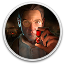
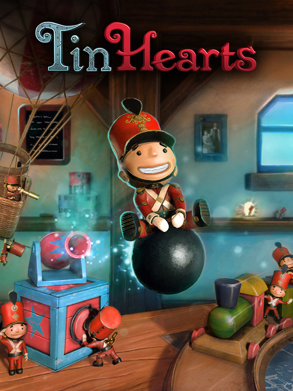

 Tin Hearts
Details
|  | |
| Playtime | Not Played |
| Last Activity | Never |
| Added | 8/18/2025 0:44:29 |
| Modified | 9/18/2025 12:10:12 |
| Completion Status | Not Played |
| Library | Gog |
| Source | GOG |
| Platform | GOG |
| Release Date | 4/20/2023 |
| Community Score | 70 |
| Critic Score | 90 |
| User Score | |
| Genre | Adventure Indie |
| Developer | Rogue Sun |
| Publisher | Wired Productions |
| Feature | Single-Player |
| Links | Official Website GOG Steam Twitch YouTube Epic Discord Subreddit Nintendo Playstation |
| Tag | 2D Indie Logic Platformer Puzzle Strategy |
Description
Embark on a series of lemmings-like puzzles to relive the captivating and emotional story of a genius inventor, Albert J. Butterworth, whilst guiding a troop of tin soldiers to reach their goal. Critically acclaimed for its moving narrative, refined puzzle design, and immersive atmosphere, Tin Hearts is a narrative puzzle adventure where the ghosts of the past emerge to tell a resonating tale of family, love, and compromise.
Spanning across four distinctive acts with 50+ puzzles masterfully woven throughout a grand Victorian home, steadily uncover a variety of whimsical inventions with unique abilities to provide a safe route of passage for the tin soldiers to travel. From the meticulous garden, where the soldiers can bounce, glide and soar to their goal, or the inventor’s basement filled with the heights of innovation and technology, each location has an abundance of treasured memories, whilst there are some that would rather be forgotten.
In a tragic fable which will see Albert overwhelmed by sorrow and heartache, discover what brilliant minds do when the love for life, and the love for invention, are threatened by life itself.

Set out on an immersive adventure through 50+ lemmings-like puzzles which constantly evolve as you progress. Uncover new routes to your destination each time you play, with multiple ways to solve the intricate puzzles.

In a multi-layered and heartfelt narrative, told through treasured memories, photographs and hand-written letters, there is much to be uncovered in Tin Hearts. Witness the delicate balance of family with the persistence of work and the exploitative nature of the Guild of Toy Makers as you wander through Alberts life.

Explore the world through the perspective of the independent and fully controllable Mr Soldier, a Tin Soldier who is able to break rank and scout out the best way to progress, whilst bringing with him an additional layer of discovery throughout the adventure.

Unlock the power to control a variety of ground-breaking inventions steadily introduced throughout the game. Manoeuvre toy cannons, trampoline drums, and balloon inflating machines before taking on the electrifying vigour of the power glove, a visionary invention which is truly ahead of its time.

Pause, fast-forward and rewind time to observe and change the outcome of your actions. With the offer of hints readily available, Tin Hearts provides an accessible and relaxing puzzle-solving experience to complement your journey.

Take your time working through the relaxing puzzles whilst indulging in the poignant soundtrack from award-winning composer Matthew Chastney, whose credits include trailers for ‘JOKER’, 'Chernobyl', and 'Bridgerton'.

Tin Hearts is brought to life by former members of the exceptionally talented Lionhead Studios development team, responsible for the critically acclaimed Fable series.

Experience the VR version of the game, designed exclusively from the ground up for virtual reality platforms, where players can fully immerse themselves in the beautiful world of Tin Hearts. Directly control, touch and feel the game’s mechanics, or physically move closer to take a look at the stunning environments and charming toys.
Spanning across four distinctive acts with 50+ puzzles masterfully woven throughout a grand Victorian home, steadily uncover a variety of whimsical inventions with unique abilities to provide a safe route of passage for the tin soldiers to travel. From the meticulous garden, where the soldiers can bounce, glide and soar to their goal, or the inventor’s basement filled with the heights of innovation and technology, each location has an abundance of treasured memories, whilst there are some that would rather be forgotten.
In a tragic fable which will see Albert overwhelmed by sorrow and heartache, discover what brilliant minds do when the love for life, and the love for invention, are threatened by life itself.
Set out on an immersive adventure through 50+ lemmings-like puzzles which constantly evolve as you progress. Uncover new routes to your destination each time you play, with multiple ways to solve the intricate puzzles.
In a multi-layered and heartfelt narrative, told through treasured memories, photographs and hand-written letters, there is much to be uncovered in Tin Hearts. Witness the delicate balance of family with the persistence of work and the exploitative nature of the Guild of Toy Makers as you wander through Alberts life.
Explore the world through the perspective of the independent and fully controllable Mr Soldier, a Tin Soldier who is able to break rank and scout out the best way to progress, whilst bringing with him an additional layer of discovery throughout the adventure.
Unlock the power to control a variety of ground-breaking inventions steadily introduced throughout the game. Manoeuvre toy cannons, trampoline drums, and balloon inflating machines before taking on the electrifying vigour of the power glove, a visionary invention which is truly ahead of its time.
Pause, fast-forward and rewind time to observe and change the outcome of your actions. With the offer of hints readily available, Tin Hearts provides an accessible and relaxing puzzle-solving experience to complement your journey.
Take your time working through the relaxing puzzles whilst indulging in the poignant soundtrack from award-winning composer Matthew Chastney, whose credits include trailers for ‘JOKER’, 'Chernobyl', and 'Bridgerton'.
Tin Hearts is brought to life by former members of the exceptionally talented Lionhead Studios development team, responsible for the critically acclaimed Fable series.
Experience the VR version of the game, designed exclusively from the ground up for virtual reality platforms, where players can fully immerse themselves in the beautiful world of Tin Hearts. Directly control, touch and feel the game’s mechanics, or physically move closer to take a look at the stunning environments and charming toys.